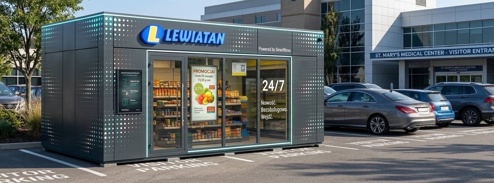
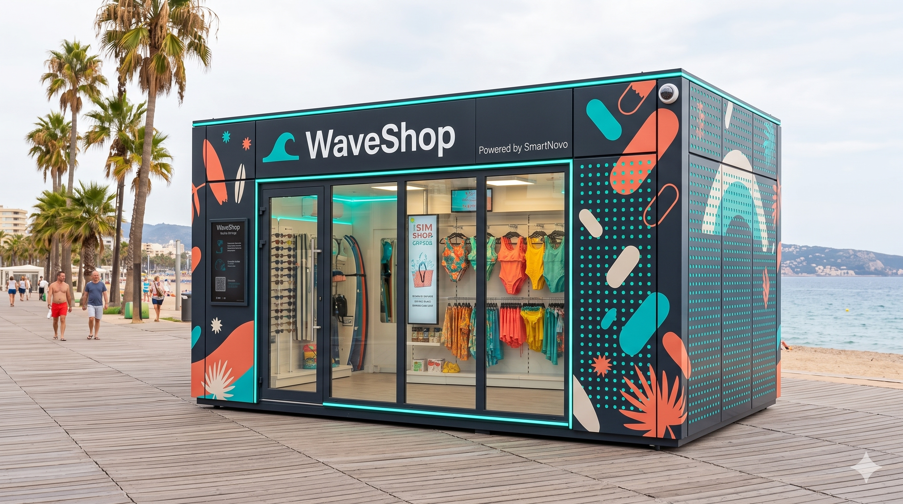
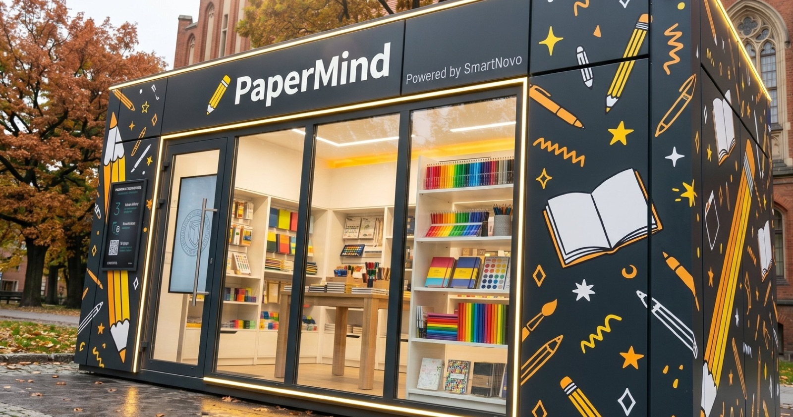

Kampusy biurowe
Jedna AI jest kierownikiem, kasjerem, ochroniarzem i działem marketingu. Klient skanuje, robi zakupy i wychodzi. Sklep 21 m², postawiony dźwigiem i handlujący w niecałą godzinę, pod dowolną marką.
Tysiące stacji paliw, kampusów, szpitali i małych miejscowości ma realny popyt. Ale jeden pracownik na każdej zmianie zatapia wynik, zanim zeskanujemy pierwszy koszyk, więc SmartNovo usuwa pozycje, które łamią model.
Personel to połowa do dwóch trzecich kosztów sklepu convenience. Płaca minimalna w Polsce niemal podwoiła się w pięć lat.
Większość małych sklepów zamyka się o 21:00 i w święta, dokładnie wtedy, gdy format 24/7 przejąłby popyt, który dziś odchodzi.
Straty to 1,5 do 2% europejskiej sprzedaży detalicznej, a małe sklepy rzadko mają ochronę w czasie rzeczywistym.
Tradycyjne wykończenie to najem, budowa i pozwolenia: miesiące i sześciocyfrowy koszt, zanim zaczniesz handel. I wszystko utopione w lokalu. Gdy lokalizacja przestaje działać, właściciel odchodzi, a wykończenie zostaje.
Jest kierownikiem, kasjerem, ochroniarzem i działem marketingu w jednym systemie. Otwiera drzwi, śledzi każdy produkt w czasie rzeczywistym, wykrywa kradzieże i upadki oraz sama decyduje, jakie promocje uruchomić. Gdy zapasy się kończą, składa zamówienie i wysyła asystenta, żeby uzupełnił dokładnie to, o co prosi.
Ludzie nie prowadzą tego sklepu. Pracują dla niego.
Klient otwiera drzwi aplikacją, kartą płatniczą lub numerem telefonu. Bezpieczne, sterowane czujnikami, bezdotykowe.
System rejestruje nieopłacony towar w czasie rzeczywistym, powiadamia klienta i równolegle alarmuje operatora.
Rozpoznaje upadek osoby i wysyła alert medyczny. Opieka bez personelu.
AI śledzi każdy produkt w czasie rzeczywistym i składa zamówienie, zanim półki się opróżnią.
Kasa samoobsługowa z kartą i BLIK-iem. Jednostka rozlicza się sama.
AI decyduje, jakie oferty uruchomić i kiedy, i wyświetla je na ekranach w sklepie.
Śledzenie szkieletowe w 138 punktach i rozpoznawanie zachowań, budowane u nas przez cztery lata i działające na zwykłych kamerach na brzegu sieci.
W chwili, gdy system zarejestruje nieopłacony towar, klient dostaje natychmiastowe powiadomienie: produkt, cena i jedno dotknięcie, aby zapłacić. Równolegle powiadamiana jest ochrona. Neutralnie z założenia, bez oskarżeń, tylko zapis i szybka korekta. Jeśli to pomyłka, jedno dotknięcie zgłasza sprzeciw i sprawę przejmuje człowiek.
Ten sam model szkieletowy rozpoznaje upadek i wysyła natychmiastowy alert medyczny. To opieka w sklepie bez obsługi, bez identyfikowania czyjejkolwiek twarzy.



Convenience, apteka, kampus, stacja paliw czy kurort. Jednostka jest ta sama, a marka jest Twoja.
Asortyment konfigurowany dla każdej lokalizacji i zgodnie z obowiązującym prawem.


 NVIDIA
NVIDIA
To, o co operatorzy i marki pytają najpierw.
Powiedz nam, gdzie i pod jaką marką. Pokażemy jednostkę handlującą w tygodnie, nie kwartały.